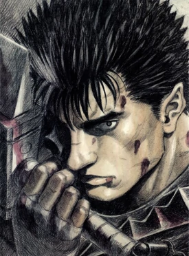
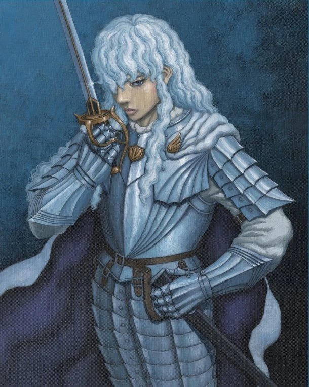
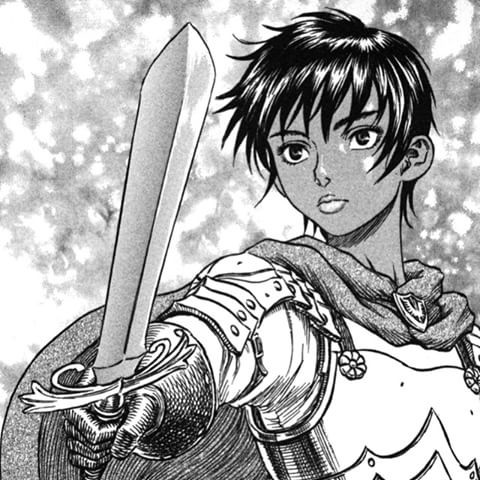
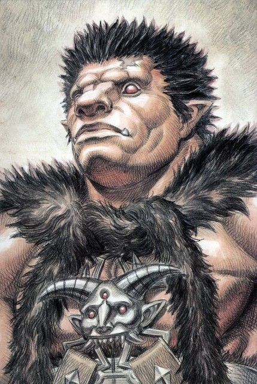
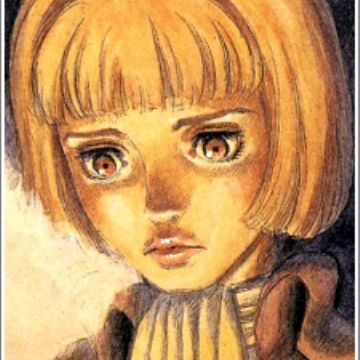
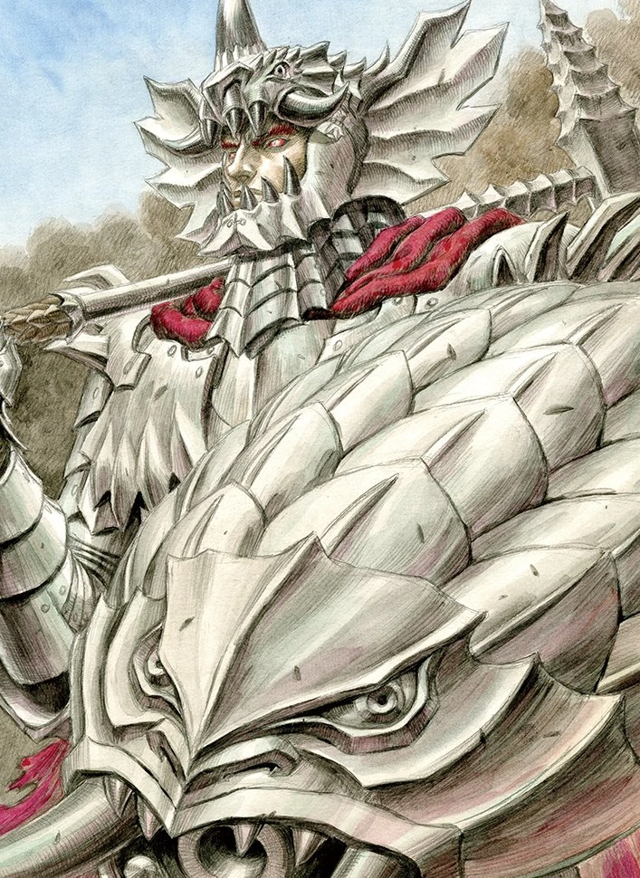
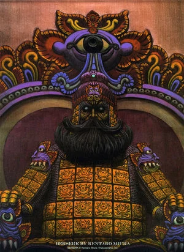
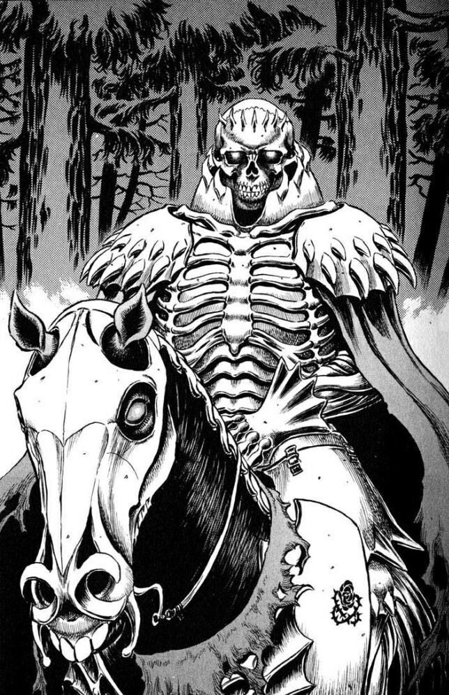
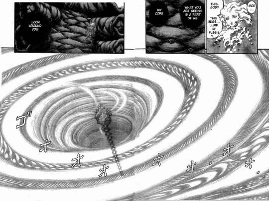
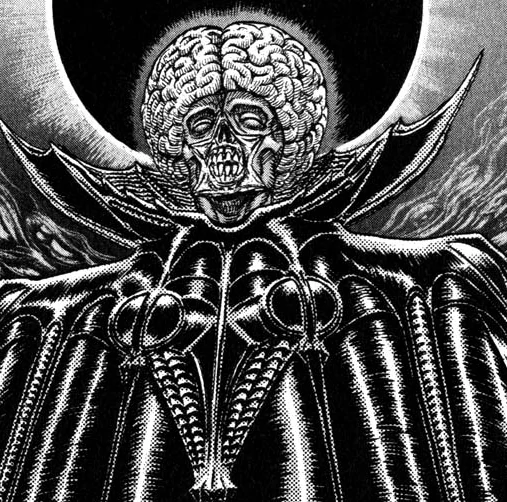

Este site foi construído com amor para mostrar o quanto esse mangá, considerado por muitos
artistas
renomados, é na verdade
uma obra de arte.Com ele eu aprendi que quando algo te derruba, você precisa ser forte
para se levantar, e mais forte ainda para evoluir com isso, e é isso que nos torna BERSERKERS!
Descubra aqui mais curiosidades sobre o mangá, detalhes da história, e até
mesmo um Quiz para ver o quão fã você é!
Resumo de Berserk:
Em um mundo cruel, onde a violência é a única forma de sobrevivência, existe
um pequeno garoto chamado
Guts que ficou órfão durante uma terrível guerra.
Guts acabou sendo adotado por Gambino, líder de um grupo de mercenários, e por isso treinou o jovem
garoto
como um um assassino. Em pouco tempo, Guts se
tornou o melhor dos mercenários, mas acabou passando por outros traumas que o fizeram se tornar uma
pessoa
amarga e sem visão de um futuro ou de uma vida
melhor, pois tudo que ele conhecia era a dor. Alguns anos depois, Guts conheceu o bando do Falcão, um
grupo
de guerreiros liderados por Griffith, um idealista
que tinha como objetivo transformar o mundo em um lugar melhor, e os dois possuiam ideais muito
diferentes,
mas Guts encontrou nesse grupo um propósito, algo
para lutar que não fosse apenas em troca de moedas, e acabou se tornando um dos mais fiéis seguidores de
Griffith. Ver mais
Depois de passarem por várias batalhas, Guts começou a perceber que não estava seguindo seu propósito ou
seus sonhos, e sim os sonhos de Griffith, e
por isso acabou desertando o grupo e seguindo seu caminho.Anos mais tarde, ele descobre que Griffith foi
aprisionado em um castelo e torturado
pelo rei após tentar ter coito com a princesa, e Guts junto com o bando do Falcão resgatam Griffith que
estava a beira da morte. Griffith então
recebe um amuleto amaldiçoado conhecido como Behelit, que tem o poder de transformar um humano em um
Apóstulo, que seria um humano corrompido
que se tornaria um demônio e adquirindo poderes e uma força amedrontadora. Griffith por desejar o poder
acima de tudo para conquistar seus objetivos, acabou
aceitando o pacto e se tornando um Apóstulo. Durante o evento, Griffith e Guts tiveram uma luta terrível, já
que os dois perceberam que não tinham mais
os mesmos objetivos, e Guts já não via mais seu amigo de antes, apenas um monstro em sua frente. Depois de
uma árdua batalham Guts sai gravemente ferido
de lá, e ainda descobre que o mundo em que ele vivia, agora está cercado de demônios que foram soltos após a
transformação de Griffith. Então o espadachim
negro decide vagar pelo mundo matando essas criaturas, e buscando sua vingança contra Griffith, e então é aí
que começa uma jornada de ideais, batalhas épicas,
e uma história cheia de filosofias sobre quem realmente somos, e quem queremos ser quando coisas ruins
acontecem, e se as pessoas são más porque o mundoé assim
, ou se são más apenas por ter um coração sombrio. Ver menos
OS PERSONAGENS










Nome: Guts
História:Guts era um jovem órfão que cresceu como um mercenário, e que procurava um propósito em sua
vida. Um certo dia, acabou conhecendo Griffith, um jovem idealista e líder do 'Bando do falcão'.
Após muitas aventuras, os dois acabaram se desentendendo e Guts saiu pelo mundo em busca de seus
sonhos e novas aventuras
"Eu nunca esperei por um milagre, farei as coisas acontecerem por mim mesmo."